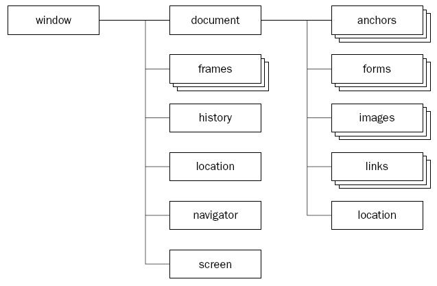

El objeto screen colabora directamente con el objeto window:

El objeto screen ofrece información acerca del monitor donde se está ejecutando el navegador.
La propiedades principales del objeto screen son:
availHeight : El alto de la pantalla en pixeles disponible para el navegador.
availWidth : El ancho de la pantalla en pixeles disponible para el navegador.
colorDepth : Representa el número de bits usados para representar los colores.
height : El alto de la pantalla en pixeles.
width : El ancho de la pantalla en pixeles.
El siguiente programa muestra el valor almacenado en las cinco propiedades que tiene el objeto screen:
El siguiente programa muestra el valor almacenado en las cinco propiedades que tiene el objeto screen:
Confeccionar un programa que al presionar un botón aparezca una ventana que ocupe todo el ancho del monitor y la mitad de su altura.